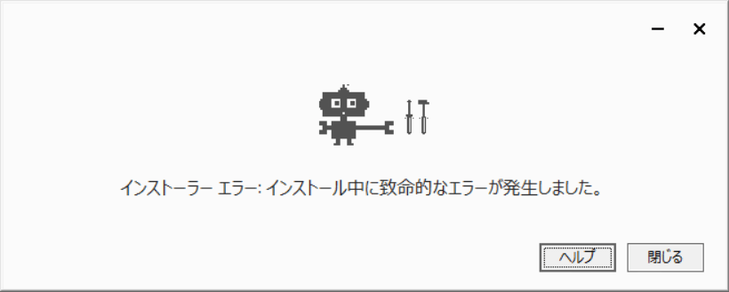

Google 日本語入力
2026-02-15 現在、未対応です。
インストールの最中にエラーが発生し、完了できませんでした。
ヘルプをクリックすると、ページを開きました。
Gboard ヘルプ コミュニティでは、この現象について、対応していないものと説明しています。
Win11 と書かれていますが、本文に書かれています通り、ARM 版 Windows 11 をご利用のようです。
現時点では、Google 日本語入力は ARM 版 Windows には対応しておりません。
他社製品も対応しておらず、OS 標準のものしか利用できない状況となっています。
対応を要望する声はあります